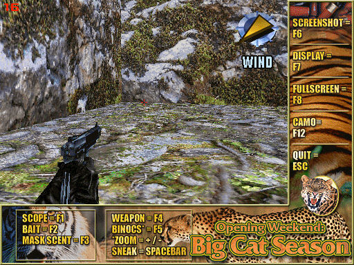

名稱：週末獵豹記 (Opening Weekend: Big Cat Season，英文版) 簡介：ManMachine 1999年出品的狩獵遊戲，由TLC代理發行 [待補]。
保護：不明 備註：XP以上系統需設定Wrun.exe為Win9x相容。 備註：以下為各系統的執行狀況： 1.VirtualBox或VMware+XP：執行後當機。 2.Win64+dgVoodoo2：正常。 3.VMware+Win98：顯示記憶體不足，無法執行。 4.86Box 3.11+Win98：可進入遊戲，但開始狩獵時顯示異常後當機。 5.PCemV12+Win95：正常。 6.PCemV17+Win98：進入遊戲後畫面異常。